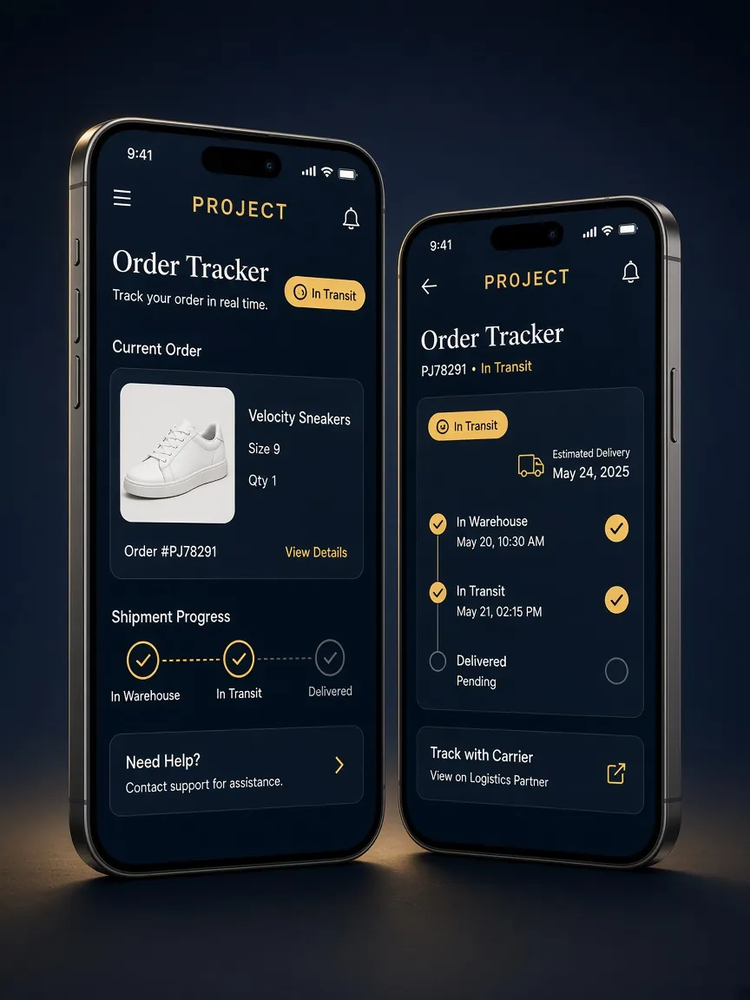

Real project
PR0JECT
Project Order Tracker — рабочий Telegram Mini App: статус заказа и таймлайн.
01
Goal
Показать статус заказа в Telegram: что едет, где сейчас, какой следующий шаг.
02
Approach
Сначала вещь и номер, затем прогресс. Mini App открывается внутри Telegram — без отдельного сайта.
03
Design
Тёмно-синий экран, золото только на статусе. Компактная сетка под Mini App.
04
Desktop
Демо выше — запись рабочего потока. Отдельного desktop-сайта у трекера нет: продукт живёт в Telegram.
05
Mobile
Текущий заказ и таймлайн.

06
Final result
Собранный Mini App, которым пользуются для трекинга заказа. Не концепт.